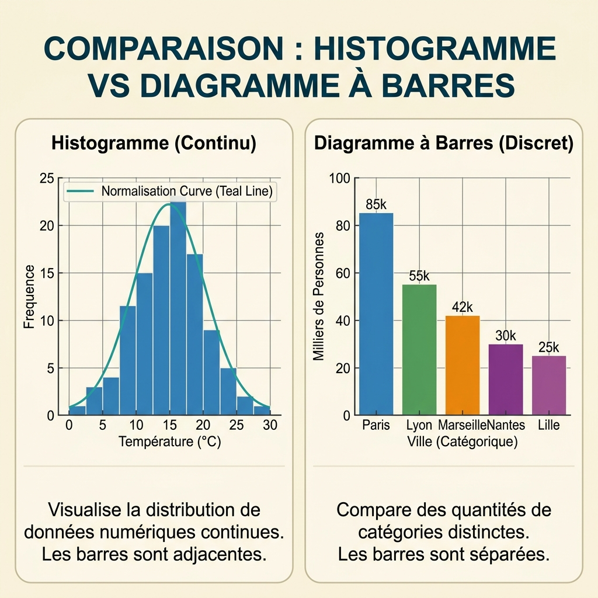

{kind=link}
flowchart TD
A[Analyse 2D] --> B{Types de variables ?}
B -->|Numérique + Numérique| C{Temporalité ?}
C -->|Oui| D[Line Plot]
C -->|Non| E[Scatter Plot]
B -->|Numérique + Catégorielle| F[Boxplot ou Bar Plot]
style D fill:#268bd2,stroke:#073642,color:#fdf6e3
style E fill:#268bd2,stroke:#073642,color:#fdf6e3
style F fill:#cb4b16,stroke:#073642,color:#fdf6e3
5 📈 Visualisation des Données
5.1 📊 Preuves Unidimensionnelles : La Distribution du Signal
💡 Concept Clé : La Grammaire des Graphiques
Avant de coder, il faut comprendre l’anatomie d’une image. La Data Visualisation moderne repose sur la Grammar of Graphics : une décomposition en couches indépendantes (Données, Esthétiques, Géométries). Un mauvais choix graphique est une faute d’enquête qui induit le décideur en erreur (Auteur Inconnu, n.d.).
Quand on explore une seule variable (Analyse 1D), l’objectif est de comprendre sa distribution ou sa composition.
5.1.1 🔎 Les Géométries de Référence
- L’Histogramme (Continu) : L’outil roi pour analyser une variable quantitative (ex: Salaire). Les barres sont adjacentes (aucun espace) pour symboliser la continuité mathématique.
- Le Diagramme à Barres (Discret) : Compare des catégories distinctes (ex: Ville). Il y a toujours un espace entre les barres.
- Le Diagramme Circulaire (Camembert) : À limiter strictement à 2 ou 3 catégories (ex: Oui/Non). L’œil humain gère mal les angles ; préférez un Bar Chart pour plus de précision.
5.1.2 ⚖️ Comparaison : Histogramme vs Bar Chart

🔍 Zoom sur la comparaison⚠️ Danger : Le Biais Visuel
N’utilisez jamais de 3D décorative sur vos graphiques. Cela introduit des distorsions de perspective qui faussent la perception des proportions. Un enquêteur doit rester factuel.
🎒 Astuce Pro : Choix de la couleur
Utilisez la couleur pour mettre en évidence une anomalie ou une catégorie spécifique, et non pour faire du “coloriage”. Chaque variable visuelle doit porter une information.
5.2 Graphiques bidimensionnels
Chercher la structure
Passer d’une à deux variables, c’est comme passer d’une photo d’identité à un film : on commence à voir du mouvement et des interactions. En analyse 2D, on ne cherche plus seulement à savoir “comment est la donnée”, mais “comment l’une influence l’autre” (Auteur Inconnu, n.d.).
5.2.1 🌌 1. Le Nuage de Points (Scatter Plot) : Le Roi de l’Exploration
Le Scatter Plot est l’outil souverain pour détecter les corrélations, les groupes naturels (clusters) et les densités de points (Around Data Science 2026).
- Usage : Idéal pour deux variables numériques continues.
- Ce qu’il révèle : Une ligne droite (corrélation linéaire), une courbe (non-linéaire), ou des “paquets” isolés qui suggèrent que vos données sont divisées en segments distincts (ex: clients économes vs clients dépensiers).
5.2.2 📈 2. Le Graphique Linéaire (Line Plot) : La Flèche du Temps
Le Line Plot connecte les points entre eux. Cette connexion n’est pas qu’esthetique : elle implique un lien de continuité ou de causalité temporelle (Auteur Inconnu, n.d.).
- Règle d’or : À réserver strictement aux séries temporelles ou aux séquences ordonnées. Si l’ordre des points sur l’axe X peut être mélangé sans perdre de sens, alors vous ne devez pas utiliser de ligne.
5.2.3 📦 3. La Boîte à Moustaches (Boxplot) : Le Scanner Statistique
Le Boxplot est l’instrument de précision pour comparer une variable continue (ex: Salaire) à travers plusieurs catégories (ex: Métier) (Auteur Inconnu, n.d.).
- La Médiane : La barre centrale, robuste aux extrêmes.
- La Boîte (IQR) : Contient les 50 % centraux de vos données.
- Les Moustaches : Montrent la dispersion.
- Les Outliers : Les points isolés au-delà des moustaches, souvent des anomalies de capteurs ou des cas exceptionnels.
5.2.3.1 Interactif : Décoder un Boxplot
Le Boxplot est souvent mal compris par les néophytes. Utilisez ce simulateur pour manipuler les points de données et voir comment la boîte, les moustaches et les “outliers” réagissent en temps réel.
{"component":"LlmGeneratedComponent","props":{"height":"700px","prompt":"Crée un outil interactif pédagogique : 'L'Anatomie du Boxplot'. \n\nObjectif : Expliquer visuellement les concepts de Médiane, Quartiles (Q1, Q3), Écart Interquartile (IQR) et Outliers.\n\nStructure :\n1. Un plan horizontal avec une série de points (données brutes) que l'utilisateur peut ajouter ou déplacer à la souris.\n2. Juste au-dessus, un Boxplot dynamique qui se recalcule en temps réel selon la position des points.\n3. Des étiquettes claires qui s'affichent au survol des composants du Boxplot :\n - 'Médiane (50%)'\n - 'Q1 (25%) et Q3 (75%)'\n - 'Moustaches (1.5 * IQR)'\n - 'Outliers (Valeurs aberrantes)'.\n\nComportement : Si l'utilisateur déplace un point très loin des autres, le point doit changer d'apparence (devenir une croix par exemple) et le Boxplot doit marquer ce point comme 'Outlier' au-delà des moustaches. Ajouter un bouton 'Réinitialiser' avec un jeu de données standard.","id":"im_349d6bc69ce30f83"}}
5.2.4 🌳 Arbre de Décision Visuel 2D
[ACTION REQUISE] : Ajouter capture d’écran d’un Scatter Plot avec une droite de régression et un Boxplot comparatif générés avec Plotly.
5.3 Visualisation de 3 variables ou plus
Repousser les limites cognitives
L’augmentation de la dimensionnalité d’un graphique (passer de 2 à 3, 4 ou 5 variables) doit respecter une hiérarchie visuelle stricte pour éviter la saturation cognitive. Un graphique surchargé n’informe plus, il embrouille. C’est ici que l’ingénieur doit jouer avec les attributs pré-attentifs comme la couleur, la taille ou la forme (Auteur Inconnu, n.d.).
5.3.1 🎛️ 1. Représenter 3 variables sur un écran 2D
Lorsque l’on a deux variables numériques (X et Y) et une troisième variable quantitative (Z) ou catégorielle, plusieurs stratégies s’offrent à nous.
5.3.1.1 L’encodage par la taille (Bubble Plot)
C’est un Scatter Plot (Nuage de points) classique, mais la taille de chaque point varie en fonction de la troisième variable (Z).
- Exemple : X = PIB par habitant, Y = Espérance de vie, Taille du point = Population du pays.
5.3.1.2 L’encodage par la couleur (Heatmap / Carte de Chaleur)
La Heatmap représente l’intensité ou la magnitude d’une variable Z sur un quadrillage 2D en utilisant un dégradé de couleurs.
- Usage phare : Afficher une Matrice de Corrélation. Plutôt que de lire un grand tableau de chiffres, l’œil repère instantanément les carrés rouge foncé (forte corrélation positive) ou bleu foncé (corrélation négative) (Auteur Inconnu, n.d.).
5.3.2 🧊 2. Le Piège de la 3D Décorative
L’ajout d’un troisième axe physique (Z) permet de créer des graphiques de surface ou des nuages de points en vraie 3D (très bien gérés par des outils comme Plotly).
Proscription de la 3D inutile
En dehors des surfaces topographiques réelles (la géographie) ou de la physique des matériaux, la 3D introduit des distorsions de perspective qui rendent la lecture des valeurs imprécise sur un écran plat. Tourner un graphique 3D est impressionnant techniquement, mais c’est souvent une erreur de design analytique majeure si une Heatmap 2D suffisait (Auteur Inconnu, n.d.).
5.3.3 🌍 3. Les Cartes Géographiques (Geospatial)
Dès que vos données contiennent des latitudes/longitudes ou des codes postaux, le meilleur graphique est souvent une carte.
- Folium : Basée sur la librairie JavaScript Leaflet, c’est le standard pour intégrer des cartes interactives (zoomables) avec des marqueurs directement dans un Notebook Jupyter (Papareddy and Gotsman 2025).
- La Carte Choroplèthe : Les régions géographiques (pays, départements) sont colorées en fonction d’une variable statistique (ex: densité de population). Cela nécessite de croiser vos données Pandas avec des fichiers de géométrie (GeoJSON ou Shapefile) gérés par GeoPandas (Sharma 2024).
6 💻 Implémentation : La Matrice de Corrélation
import seaborn as sns
import matplotlib.pyplot as plt
# Calcul de la matrice de corrélation
corr_matrix = df.corr()
# Génération de la Heatmap
plt.figure(figsize=(10, 8))
sns.heatmap(
corr_matrix,
annot=True, # Affiche la valeur numérique dans la case
cmap='coolwarm', # Dégradé de couleurs (Bleu au Rouge)
vmin=-1, vmax=1 # Fixe l'échelle absolue de corrélation
)
plt.title("Matrice de Corrélation des Variables")
plt.show()[ACTION REQUISE] : Ajouter capture d’écran d’une Heatmap générée avec Seaborn montrant un dégradé coolwarm clair.
6.1 Création de tableaux de bord interactifs (Dashboards) avec des outils comme Plotly et Dash
La fin du reporting figé
En 2026, fournir un rapport PDF statique à un décideur n’est plus suffisant. L’interactivité n’est plus un gadget esthétique, c’est une nécessité stratégique pour le “drill-down” (l’exploration en profondeur) (Auteur Inconnu 2026). Un décideur doit pouvoir zoomer sur une région, filtrer par année ou exclure une catégorie d’un simple clic. C’est ici qu’interviennent les Dashboards (Tableaux de bord).
6.1.1 🕹️ 1. Le Moteur Interactif : Plotly
Avant de construire une application web complète, il faut changer la nature de nos graphiques. Avec Matplotlib ou Seaborn, le code génère une image “morte” (un fichier PNG).
Avec Plotly, le code Python génère un objet web interactif interprété par le navigateur.
- Avantage immédiat : L’utilisateur peut survoler les points pour lire les valeurs (Hover), zoomer, ou désactiver des courbes dans la légende.
- Haute Performance : Grâce à l’utilisation de WebGL/WebGPU, Plotly peut rendre des millions de points directement dans le navigateur en déchargeant le calcul sur la carte graphique (GPU) (Plotly 2026).
6.1.2 🥊 2. Le Duel des Frameworks : Streamlit vs Dash
Pour encapsuler ces graphiques Plotly dans une vraie page web avec des boutons, des menus déroulants et des curseurs, le marché est dominé par deux philosophies.
6.1.2.1 Streamlit : Le Roi du Prototypage
C’est l’outil adoré des Data Scientists pour créer un MVP (Minimum Viable Product) en quelques heures.
- Architecture : Il fonctionne sur un modèle de script linéaire. À chaque fois que l’utilisateur clique sur un bouton, le script entier est ré-exécuté de haut en bas.
- La limite : Cette exécution linéaire peut être catastrophique en termes de performance si votre code charge un fichier de 5 Go à chaque clic. Il faut donc impérativement maîtriser le système de cache (
@st.cache_data) pour mettre les données en mémoire.
6.1.2.2 Dash by Plotly : L’Échelle Entreprise
C’est le choix privilégié pour des applications de production robustes et complexes (Gotsman 2026).
- Architecture : Il repose sur Flask et React.js. Il utilise un système de callbacks asynchrones. Si l’utilisateur clique sur un filtre, seul le graphique concerné est recalculé et rechargé, pas toute la page.
- La limite : Une courbe d’apprentissage beaucoup plus abrupte et le risque du “Callback Hell” (quand des dizaines de fonctions de mise à jour s’entrecroisent et deviennent impossibles à maintenir).
7 🏗️ Architecture d’Exécution : Streamlit vs Dash
flowchart LR
subgraph Streamlit [Streamlit : Exécution Linéaire]
S1[Clic Bouton] --> S2[Rechargement complet du script]
S2 --> S3[Rechargement Data\n'sauf si cache']
S3 --> S4[Mise à jour Page]
end
subgraph Dash [Dash : Callbacks Asynchrones]
D1[Clic Bouton] --> D2{Callback associé}
D2 --> D3[Recalcul spécifique]
D3 --> D4[Mise à jour du Composant Uniquement]
end
style Streamlit fill:#dc322f,stroke:#073642,color:#fdf6e3
style Dash fill:#859900,stroke:#073642,color:#fdf6e3
7.0.1 ⚡ 3. La Révolution 2026 : Zéro Latence
Construire des tableaux de bord interactifs sur de l’énorme volumétrie (Big Data) était autrefois synonyme d’interface lente (l’application “freeze” pendant le calcul). L’écosystème Python a résolu cela en 2026 via deux avancées :
- L’architecture Apache Arrow : Elle permet le “Zero-copy”. Les données circulent entre votre moteur de calcul (Polars) et votre dashboard web sans nécessiter de coûteuses conversions de formats (Narendran 2026).
- CPython 3.14 (Free-threading) : Le verrou global (GIL) de Python ayant été supprimé, les serveurs de dashboards peuvent enfin utiliser le véritable multi-threading pour calculer les filtres des utilisateurs en parallèle sur plusieurs cœurs.
[ACTION REQUISE] : Ajouter capture d’écran d’un Dashboard Streamlit complet (avec sidebar, filtres et graphique interactif Plotly).
7.1 🌉 Conclusion et Transition
La visualisation nous permet de communiquer des informations complexes de manière intuitive. Maintenant que nous maîtrisons l’exploration et la visualisation, nous sommes prêts à passer à l’étape de la modélisation pour prédire des tendances ou classer des données.
C’est le cœur du Chapitre 5 : Modélisation et Machine Learning.
Around Data Science. 2026. “Matplotlib Vs Seaborn Vs Plotly for EDA, Dashboards, and Production.” https://arounddatascience.com/blog/data-visualization/matplotlib-vs-seaborn-vs-plotly-for-eda-dashboards-and-production/.
Auteur Inconnu. 2026. “The Python Data Visualization and Dashboarding Landscape in 2026: A Strategic Technical Analysis.”
———. n.d. “4.visualisation.md.”
Gotsman, Tom. 2026. “Streamlit Vs. Dash for Python Dashboards: Which One Should You Actually Use? (April 2026).” Reflex Blog. https://reflex.dev/blog/streamlit-vs-dash-python-dashboards/.
Narendran, Aanchal. 2026. “Polars + DuckDB: The New Power Combo for in-Process Analytics.” Open Source For You. https://www.opensourceforu.com/2026/03/polars-duckdb-the-new-power-combo-for-in-process-analytics/.
Papareddy, SP Sumanth, and Tom Gotsman. 2025. “Top 10 Python Data Visualization Libraries in 2025.” Reflex Blog. https://reflex.dev/blog/top-10-data-visualization-libraries/.
Plotly. 2026. “High Performance Visualization in Python.” https://plotly.com/python/performance/.
Sharma, Vinay Kumar. 2024. “Top 6 Python Data Visualization Libraries (2026).” Kellton. https://www.kellton.com/kellton-tech-blog/6-powerful-libraries-in-python-for-data-visualization.